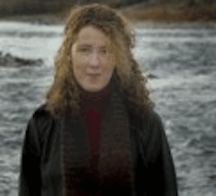

|

Excerpt from New West Missoula. CLARK FORK COALITION DIRECTOR STEPS DOWN Tracy Stone-Manning Joins Jon Tester's Team By Courtney Lowery, 1-08-07 Tracy Stone-Manning, who has led the Clark Fork Coalition for the last eight years including shepherding the removal and site clean-up of the Milltown Dam, is leaving the organization to take a job with the newly elected Sen. Jon Tester. She will be the director of Tester's field office in Missoula. In a press release issued Monday, Tom France, the Coalition's board president said communications director Karen Knudsen will step in to work as acting director while the organization looks for a new executive director. The Coalition is hoping to have someone in place by April. Stone-Manning said in an interview Monday that the opportunity to work with Sen. Tester on a broader array of issues for Montana was "too exciting to walk away from." She also said she feels confident that the Coalition is in a strong place. "The work will carry on," she said. "I really admire, as many Montanans do, Senator Tester's real commitment to Montana..." she said. "That's pretty infectious." A graduate of the University of Montana's Environmental Studies Master's program, Stone-Manning was a volunteer for Tester's campaign and before joining the Coalition was the founding editor of Headwaters News and worked as the executive director of the Five Valleys Land Trust. Stone-Manning will begin her work with Tester half-time next week and then full-time starting February. |
|
| ©2011 Dean Young | |